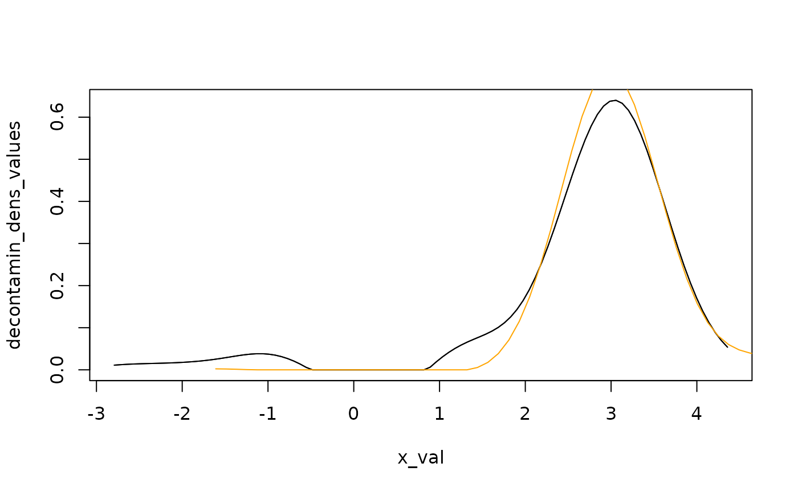

Estimation of unknown elements in admixture models
Xavier Milhaud
Source:vignettes/admixture-weight-estimation.Rmd
admixture-weight-estimation.RmdWe remind that a random variable following an admixture distribution has cumulative distribution function (cdf) given by where is a mixture component whose distribution is perfectly known, whereas and are unknown. In this setting, if no parametric assumption is made on the unknown component distribution , the mixture is considered as a semiparametric mixture. For an overview on semiparametric extensions of finite mixture models, see (Xiang and Yang 2018).
Estimation of the unknown component weight in an admixture model
The mixture weight of the unknown component distribution can be estimated using diverse techniques depending on the assumptions made on the unknown cdf , among which the ones discussed in the sequel:
- the estimator provided by Bordes and Vandekerkhove, see (L. Bordes and Vandekerkhove 2010);
- the estimator provided by Patra and Sen, see (Patra and Sen 2016);
- the estimator provided by the Inversion - Best Matching method, see (Milhaud et al. 2024).
All these estimation methods can be performed using one single generic function for estimation with appropriate arguments, the so-called function.
The one-sample case
Many works studied the estimation of the unknown proportion in two-component admixture models. Among them, seminal papers are (Laurent Bordes, Delmas, and Vandekerkhove 2006) and (S. Bordes L. Mottelet and Vandekerkhove 2006). These papers are closely connected to the paper by (L. Bordes and Vandekerkhove 2010), where an asymptotic normal estimator is provided for the unknown component weight.
Case of symmetric unknown density
In this case, we use the Bordes and Vandekerkhove estimator, see (L. Bordes and Vandekerkhove 2010).
## Simulate mixture data:
mixt1 <- twoComp_mixt(n = 400, weight = 0.7,
comp.dist = list("norm", "norm"),
comp.param = list(c("mean" = 3, "sd" = 0.5),
c("mean" = 0, "sd" = 1)))
data1 <- get_mixture_data(mixt1)
## Define the admixture model:
admixMod <- admix_model(knownComp_dist = mixt1$comp.dist[[2]],
knownComp_param = mixt1$comp.param[[2]])
admix_estim(samples = list(data1), admixMod = list(admixMod), est_method = 'BVdk')
#>
#> Call:admix_estim(samples = list(data1), admixMod = list(admixMod),
#> est_method = "BVdk")
#>
#> ******** Sample #1 ********
#> Estimated mixing weight: 0.665 / Estimated location shift: 2.976
#> Variance of weight estimator: NA / Variance of loc. estimator: NABecause this estimation method relies on the symmetry of the unknown component density, the estimator provides both the estimated mixing weight of the unknown component distribution and the estimated location shift parameter.
Other cases
In full generality (no assumptions made on the unknown component distribution), we use the Patra and Sen estimator, see (Patra and Sen 2016).
admix_estim(samples = list(data1), admixMod = list(admixMod), est_method = 'PS')
#>
#> Call:admix_estim(samples = list(data1), admixMod = list(admixMod),
#> est_method = "PS")
#>
#> ******** Sample #1 ********
#> Estimated mixing weight (of the unknown component): 0.641
#> The chosen value c_n is 0.179In this case, the only estimated parameter is the mixing proportion related to the unknown component distribution.
The two-sample case
In the two-sample setting, one idea could be to use the Inversion - Best Matching (IBM) approach. The IBM method ensures asymptotically normal estimators of the unknown quantities, which will be very useful in a testing perspective. However, it is important to note that such estimators are mostly biased when , and general one-sample estimation strategies such as (Patra and Sen 2016) or (L. Bordes and Vandekerkhove 2010) may be preferred to estimate the unknown component proportion in general settings (despite that this is more time-consuming). In the latter case, one performs twice the estimation method, on each of the two samples under study.
Under the null hypothesis
When we are under the null, Milhaud et al. (2024) show that the estimators is consistent towards the true parameter values.
## Simulate mixture data:
mixt1 <- twoComp_mixt(n = 450, weight = 0.4,
comp.dist = list("norm", "norm"),
comp.param = list(list("mean" = -2, "sd" = 0.5),
list("mean" = 0, "sd" = 1)))
mixt2 <- twoComp_mixt(n = 380, weight = 0.7,
comp.dist = list("norm", "norm"),
comp.param = list(list("mean" = -2, "sd" = 0.5),
list("mean" = 1, "sd" = 1)))
data1 <- get_mixture_data(mixt1)
data2 <- get_mixture_data(mixt2)
## Define the admixture models:
admixMod1 <- admix_model(knownComp_dist = mixt1$comp.dist[[2]],
knownComp_param = mixt1$comp.param[[2]])
admixMod2 <- admix_model(knownComp_dist = mixt2$comp.dist[[2]],
knownComp_param = mixt2$comp.param[[2]])
admix_estim(samples = list(data1, data2), admixMod = list(admixMod1, admixMod2),
est_method = 'IBM')
#>
#> Call:admix_estim(samples = list(data1, data2), admixMod = list(admixMod1,
#> admixMod2), est_method = "IBM")
#>
#> Pairwise estimation performed (IBM estimation method).
#>
#> ******** Samples #1 with #2 ********
#> Estimated mixing weight of the unknown distribution in the 1st sample: 0.409
#> Estimated mixing weight of the unknown distribution in the 2nd sample: 0.725
#> Variance of the estimated weight in the 1st sample: NA
#> Variance of the estimated weight in the 2nd sample: NAIndeed, one can see that the two unknown proportions were consistently estimated.
Under the alternative hypothesis
Estimators are also consistent under , although they can be (strongly) biased as compared to their true values as illustrated in the following example.
## Simulate mixture data:
mixt1 <- twoComp_mixt(n = 800, weight = 0.5,
comp.dist = list("norm", "norm"),
comp.param = list(list("mean" = 1, "sd" = 0.5),
list("mean" = 0, "sd" = 1)))
mixt2 <- twoComp_mixt(n = 600, weight = 0.7,
comp.dist = list("norm", "norm"),
comp.param = list(list("mean" = 3, "sd" = 0.5),
list("mean" = 5, "sd" = 2)))
data1 <- get_mixture_data(mixt1)
data2 <- get_mixture_data(mixt2)
## Define the admixture models:
admixMod1 <- admix_model(knownComp_dist = mixt1$comp.dist[[2]],
knownComp_param = mixt1$comp.param[[2]])
admixMod2 <- admix_model(knownComp_dist = mixt2$comp.dist[[2]],
knownComp_param = mixt2$comp.param[[2]])
## Estimate the mixture weights of the two admixture models (provide only hat(theta)_n):
admix_estim(samples = list(data1, data2), admixMod = list(admixMod1, admixMod2),
est_method = 'IBM')
#>
#> Call:admix_estim(samples = list(data1, data2), admixMod = list(admixMod1,
#> admixMod2), est_method = "IBM")
#>
#> Pairwise estimation performed (IBM estimation method).
#>
#> ******** Samples #1 with #2 ********
#> Estimated mixing weight of the unknown distribution in the 1st sample: 0.332
#> Estimated mixing weight of the unknown distribution in the 2nd sample: 0.655
#> Variance of the estimated weight in the 1st sample: NA
#> Variance of the estimated weight in the 2nd sample: NAIn such a framework, it is therefore better to use the estimator by (Patra and Sen 2016), which shows better performance:
admix_estim(samples = list(data1, data2), admixMod = list(admixMod1, admixMod2),
est_method = 'PS')
#>
#> Call:admix_estim(samples = list(data1, data2), admixMod = list(admixMod1,
#> admixMod2), est_method = "PS")
#>
#> ******** Sample #1 ********
#> Estimated mixing weight (of the unknown component): 0.45
#> The chosen value c_n is 0.19
#>
#> ******** Sample #2 ********
#> Estimated mixing weight (of the unknown component): 0.727
#> The chosen value c_n is 0.186Estimation of the unknown cumulative distribution function
Concerning the unknown cdf , one usually estimate it thanks to the inversion formula once has been consistenly estimated.
This is what is commonly called the decontaminated density of the unknown component. In the following, we propose to compare the two decontaminated densities obtained once the unknown quantities have been consistently estimated by the IBM approach. Note that we are under the null (), and thus that the decontaminated densities should look similar.
## Simulate mixture data:
mixt1 <- twoComp_mixt(n = 800, weight = 0.4,
comp.dist = list("norm", "norm"),
comp.param = list(list("mean" = 3, "sd" = 0.5),
list("mean" = 0, "sd" = 1)))
mixt2 <- twoComp_mixt(n = 700, weight = 0.6,
comp.dist = list("norm", "norm"),
comp.param = list(list("mean" = 3, "sd" = 0.5),
list("mean" = 5, "sd" = 2)))
data1 <- get_mixture_data(mixt1)
data2 <- get_mixture_data(mixt2)
## Define the admixture models:
admixMod1 <- admix_model(knownComp_dist = mixt1$comp.dist[[2]],
knownComp_param = mixt1$comp.param[[2]])
admixMod2 <- admix_model(knownComp_dist = mixt2$comp.dist[[2]],
knownComp_param = mixt2$comp.param[[2]])
## Estimation:
est <- admix_estim(samples = list(data1,data2), admixMod = list(admixMod1,admixMod2),
est_method = 'PS')
prop <- get_mixing_weights(est)
## Determine the decontaminated version of the unknown density by inversion:
res1 <- decontaminated_density(sample1 = data1, estim.p = prop[1], admixMod = admixMod1)
res2 <- decontaminated_density(sample1 = data2, estim.p = prop[2], admixMod = admixMod2)
## Use appropriate sequence of x values:
plot(x = res1, x_val = seq(from = 0, to = 6, length.out = 100), add_plot = FALSE)
plot(x = res2, x_val = seq(from = 0, to = 6, length.out = 100), add_plot = TRUE, col = "red")